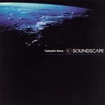

| Artist: | Tadashi Goto |
| Title: | Soundscape |
| Label: | Musea Parallele MP 3046.AR |
| Length(s): | 50 minutes |
| Year(s) of release: | 2005 |
| Month of review: | [10/2005] |
| 1) | Moratorium | 1.25 |
| 2) | World Update | 3.28 |
| 3) | Lapstone | 4.35 |
| 4) | Depth Interview | 3.37 |
| 5) | Loveless | 3.54 |
| 6) | Soundscape | 11.07 |
| 7) | A Priori | 1.36 |
| 8) | Science Without Humanity | 5.24 |
| 9) | Swan Song | 6.03 |
| 10) | The Uncertainty Of Life | 4.10 |
| 11) | Yin And Yang | 4.32 |
In Depth Interview, we rage on, although this percussive tune is a meandering one. Loveless is totally different, a ballad no less. Time for some romantic moments by the hearth. Soundscape is by far the longest track on this album, over eleven minutes long. It opens all moodily, indeed as if Goto has all the time in the world. The church organ sound and programmed drums remind me most of the symphonic do-it-yourselvers like the already mentioned Fonya, but also someone like the late Brian Hirsch. This serves to indicate the mechanicalness that pervades the music. This is not accidental, but something done on purpose. At three minutes, Goto finally breaks loose again being all over the place (like his namesake from Fortran and Basic). When he thunders on I like Goto best, although the moody interlude halfway is also good. Then we get some organ dominated meandering, before we run head first into a wall of guitars and panicky keyboards. Quite an adventure.
A Priori is a short keys tune with a warm vibe feel. The melodies sound somewhat incidental, a bit like Goto is practising his playing before he goes on. Very phrase like. Science Without Humanity is back to double bass drums and a raging rhythm guitar. The style should by now be familiar: varied jazzrock sprinkled with friendly keyboards and piano, but overall a very full soundspectrum and Goto going all over the place.
In view of the title, I expect Swan Song to be a breather after its hectic predecessor. There is a certain EMishness to the music here, maybe a bit of Patrick O'Hearn's first solo album. The vocal wails add to the atmosphere. The rock does set in around the two minutes mark, sounding rather industrial. After another two minutes of this, we come to a piano part, that means a bit of relaxation. Melodically appealing, and not obvious.
The Uncertainty Of Life is a percussive tune again, sounding somewhat eighties pop like. The drums are a bit too mechanical, and a bit too many strings and fake sax. The handclap like percussion also does not help. The weakest track thus far, also because of the very mellow melody.
We close with Yin And Yang, which harbours some very nice organ work reminiscent of ELP. Then the guitar breaks loose again, and many will run for cover.